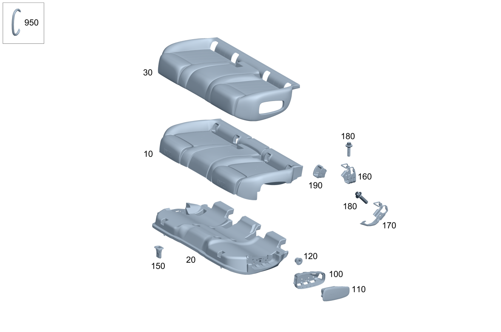

| № | Артикул | Название | Кол. | Примечание | Ограничение |
|---|---|---|---|---|---|
| 10 | A 247 920 16 00 | Накладка подушки сиденья (PADDING, RR SEAT CUSHION) | 1 | Заднее сиденье | 7U1 |
| 10 | A 247 920 16 00 | Накладка подушки сиденья (PADDING, RR SEAT CUSHION) | 1 | Заднее сиденье | 7U1 |
| 10 | A 247 920 72 00 | Накладка подушки сиденья (PADDING, RR SEAT CUSHION) | 1 | Заднее сиденье | (7U2/7U4/555) |
| 10 | A 247 920 72 00 | Накладка подушки сиденья (PADDING, RR SEAT CUSHION) | 1 | Заднее сиденье | (7U2/7U4/555) |
| 10 | A 247 920 73 00 | Накладка подушки сиденья (PADDING, RR SEAT CUSHION) | 1 | Заднее сиденье | (7U2/7U4/555)+293 |
| 10 | A 247 920 73 00 | Накладка подушки сиденья (PADDING, RR SEAT CUSHION) | 1 | Заднее сиденье | (7U2/7U4/555)+293 |
| 10 | A 247 920 98 02 | Накладка подушки сиденья | 1 | Заднее сиденье | (7U2/7U4/555)+700 |
| 10 | A 247 920 98 02 | Накладка подушки сиденья | 1 | Заднее сиденье | (7U2/7U4/555)+700 |
| 10 | A 247 920 97 02 | Накладка подушки сиденья | 1 | Заднее сиденье | (7U2/7U4/555)+293+700 |
| 10 | A 247 920 97 02 | Накладка подушки сиденья | 1 | Заднее сиденье | (7U2/7U4/555)+293+700 |
| 20 | A 247 920 74 00 | Накладка подушки сиденья (PADDING, RR SEAT CUSHION) | 1 | ||
| 20 | A 247 920 74 00 | Накладка подушки сиденья (PADDING, RR SEAT CUSHION) | 1 | ||
| 20 | A 247 920 86 03 | Накладка подушки сиденья (PADDING, RR SEAT CUSHION) | 1 | 293 | |
| 20 | A 247 920 86 03 | Накладка подушки сиденья (PADDING, RR SEAT CUSHION) | 1 | 293 | |
| 30 | A 247 920 39 01 | Обивка подушки сиденья (OUTER COVER, RR SEAT CUSH) | 1 | заднее сиденье | 7U1+300A |
| 30 | A 247 920 39 01 | Обивка подушки сиденья (OUTER COVER, RR SEAT CUSH) | 1 | заднее сиденье | 7U1+300A |
| 30 | A 247 920 40 01 | Обивка подушки сиденья (OUTER COVER, RR SEAT CUSH) | 1 | заднее сиденье | 7U2+100A |
| 30 | A 247 920 40 01 | Обивка подушки сиденья (OUTER COVER, RR SEAT CUSH) | 1 | заднее сиденье | 7U2+100A |
| 30 | A 247 920 45 01 | Обивка подушки сиденья (OUTER COVER, RR SEAT CUSH) | 1 | заднее сиденье | 7U2+100A+293 |
| 30 | A 247 920 45 01 | Обивка подушки сиденья (OUTER COVER, RR SEAT CUSH) | 1 | заднее сиденье | 7U2+100A+293 |
| 30 | A 247 920 95 01 | Обивка подушки сиденья (OUTER COVER, RR SEAT CUSH) | 1 | заднее сиденье | 7U2+200A |
| 30 | A 247 920 95 01 | Обивка подушки сиденья (OUTER COVER, RR SEAT CUSH) | 1 | заднее сиденье | 7U2+200A |
| 30 | A 247 920 96 01 | Обивка подушки сиденья (OUTER COVER, RR SEAT CUSH) | 1 | заднее сиденье | 7U2+200A+293 |
| 30 | A 247 920 96 01 | Обивка подушки сиденья (OUTER COVER, RR SEAT CUSH) | 1 | заднее сиденье | 7U2+200A+293 |
| 30 | A 247 920 80 01 | Обивка подушки сиденья (OUTER COVER, RR SEAT CUSH) | 1 | заднее сиденье | 7U2+310A |
| 30 | A 247 920 80 01 | Обивка подушки сиденья (OUTER COVER, RR SEAT CUSH) | 1 | заднее сиденье | 7U2+310A |
| 30 | A 247 920 63 07 | Обивка подушки сиденья | 1 | заднее сиденье | 7U2+310A+803+053 |
| 30 | A 247 920 63 07 | Обивка подушки сиденья | 1 | заднее сиденье | 7U2+310A+(803+053/804/805) |
| 30 | A 247 920 63 07 | Обивка подушки сиденья | 1 | заднее сиденье | 7U2+310A |
| 30 | A 247 920 85 01 | Обивка подушки сиденья (OUTER COVER, RR SEAT CUSH) | 1 | заднее сиденье | 7U2+310A+293 |
| 30 | A 247 920 85 01 | Обивка подушки сиденья (OUTER COVER, RR SEAT CUSH) | 1 | заднее сиденье | 7U2+310A+293 |
| 30 | A 247 920 64 07 | Обивка подушки сиденья | 1 | заднее сиденье | 7U2+310A+293+803+053 |
| 30 | A 247 920 64 07 | Обивка подушки сиденья | 1 | заднее сиденье | 7U2+310A+293+(803+053/804/805) |
| 30 | A 247 920 64 07 | Обивка подушки сиденья | 1 | заднее сиденье | 7U2+310A+293 |
| 30 | A 247 920 70 01 | Обивка подушки сиденья (OUTER COVER, RR SEAT CUSH) | 1 | заднее сиденье | 7U2+320A |
| 30 | A 247 920 70 01 | Обивка подушки сиденья (OUTER COVER, RR SEAT CUSH) | 1 | заднее сиденье | 7U2+320A |
| 30 | A 247 920 71 01 | Обивка подушки сиденья (OUTER COVER, RR SEAT CUSH) | 1 | заднее сиденье | 7U2+320A+293 |
| 30 | A 247 920 71 01 | Обивка подушки сиденья (OUTER COVER, RR SEAT CUSH) | 1 | заднее сиденье | 7U2+320A+293 |
| 30 | A 247 920 58 05 | Обивка подушки сиденья (OUTER COVER, RR SEAT CUSH) | 1 | заднее сиденье | (7U4/555)+(100A/150A) |
| 30 | A 247 920 58 05 | Обивка подушки сиденья (OUTER COVER, RR SEAT CUSH) | 1 | заднее сиденье | (7U4/555)+(100A/150A) |
| 30 | A 247 920 57 05 | Обивка подушки сиденья (OUTER COVER, RR SEAT CUSH) | 1 | заднее сиденье | (7U4/555)+(100A/150A)+293 |
| 30 | A 247 920 57 05 | Обивка подушки сиденья (OUTER COVER, RR SEAT CUSH) | 1 | заднее сиденье | (7U4/555)+(100A/150A)+293 |
| 30 | A 247 920 57 01 | Обивка подушки сиденья (OUTER COVER, RR SEAT CUSH) | 1 | заднее сиденье | (7U4/555)+200A |
| 30 | A 247 920 57 01 | Обивка подушки сиденья (OUTER COVER, RR SEAT CUSH) | 1 | заднее сиденье | (7U4/555)+200A |
| 30 | A 247 920 58 01 | Обивка подушки сиденья (OUTER COVER, RR SEAT CUSH) | 1 | заднее сиденье | (7U4/555)+200A+293 |
| 30 | A 247 920 58 01 | Обивка подушки сиденья (OUTER COVER, RR SEAT CUSH) | 1 | заднее сиденье | (7U4/555)+200A+293 |
| 30 | A 247 920 00 05 | Обивка подушки сиденья (OUTER COVER, RR SEAT CUSH) | 1 | заднее сиденье | (7U4/555)+210A |
| 30 | A 247 920 00 05 | Обивка подушки сиденья (OUTER COVER, RR SEAT CUSH) | 1 | заднее сиденье | (7U4/555)+210A |
| 30 | A 247 920 09 05 | Обивка подушки сиденья (OUTER COVER, RR SEAT CUSH) | 1 | заднее сиденье | (7U4/555)+210A+293 |
| 30 | A 247 920 09 05 | Обивка подушки сиденья (OUTER COVER, RR SEAT CUSH) | 1 | заднее сиденье | (7U4/555)+210A+293 |
| 30 | A 247 920 27 02 | Обивка подушки сиденья (OUTER COVER, RR SEAT CUSH) | 1 | заднее сиденье | (7U4/555)+250A |
| 30 | A 247 920 27 02 | Обивка подушки сиденья (OUTER COVER, RR SEAT CUSH) | 1 | заднее сиденье | (7U4/555)+250A |
| 30 | A 247 920 28 02 | Обивка подушки сиденья (OUTER COVER, RR SEAT CUSH) | 1 | заднее сиденье | (7U4/555)+250A+293 |
| 30 | A 247 920 28 02 | Обивка подушки сиденья (OUTER COVER, RR SEAT CUSH) | 1 | заднее сиденье | (7U4/555)+250A+293 |
| 30 | A 247 920 07 02 | Обивка подушки сиденья (OUTER COVER, RR SEAT CUSH) | 1 | заднее сиденье | (7U4/555)+650A |
| 30 | A 247 920 07 02 | Обивка подушки сиденья (OUTER COVER, RR SEAT CUSH) | 1 | заднее сиденье | (7U4/555)+650A |
| 30 | A 247 920 11 08 | Обивка подушки сиденья | 1 | заднее сиденье | (7U4/555)+650A+654A+(804+054/805) |
| 30 | A 247 920 11 08 | Обивка подушки сиденья | 1 | заднее сиденье | (7U4/555)+650A+654A |
| 30 | A 247 920 92 08 | Обивка подушки сиденья | 1 | заднее сиденье | (7U4/555)+650A+651A+(804+054/805) |
| 30 | A 247 920 92 08 | Обивка подушки сиденья | 1 | заднее сиденье | (7U4/555)+650A+(651A/671A) |
| 30 | A 247 920 92 08 | Обивка подушки сиденья | 1 | заднее сиденье | (7U4/555)+650A+(651A/641A/671A) |
| 30 | A 247 920 08 02 | Обивка подушки сиденья (OUTER COVER, RR SEAT CUSH) | 1 | заднее сиденье | (7U4/555)+650A+293 |
| 30 | A 247 920 08 02 | Обивка подушки сиденья (OUTER COVER, RR SEAT CUSH) | 1 | заднее сиденье | (7U4/555)+650A+293 |
| 30 | A 247 920 12 08 | Обивка подушки сиденья | 1 | заднее сиденье | (7U4/555)+650A+654A+293+(804+054/805) |
| 30 | A 247 920 12 08 | Обивка подушки сиденья | 1 | заднее сиденье | (7U4/555)+650A+654A+293 |
| 30 | A 247 920 93 08 | Обивка подушки сиденья | 1 | заднее сиденье | (7U4/555)+650A+651A+293+(804+054/805) |
| 30 | A 247 920 93 08 | Обивка подушки сиденья | 1 | заднее сиденье | (7U4/555)+650A+(651A/671A)+293 |
| 30 | A 247 920 93 08 | Обивка подушки сиденья | 1 | заднее сиденье | (7U4/555)+650A+(651A/641A/671A)+293 |
| 30 | A 247 920 52 06 | Обивка подушки сиденья (OUTER COVER, RR SEAT CUSH) | 1 | заднее сиденье | (7U4/555)+700A |
| 30 | A 247 920 52 06 | Обивка подушки сиденья (OUTER COVER, RR SEAT CUSH) | 1 | заднее сиденье | (7U4/555)+700A |
| 30 | A 247 920 53 06 | Обивка подушки сиденья (OUTER COVER, RR SEAT CUSH) | 1 | заднее сиденье | (7U4/555)+700A+293 |
| 30 | A 247 920 53 06 | Обивка подушки сиденья (OUTER COVER, RR SEAT CUSH) | 1 | заднее сиденье | (7U4/555)+700A+293 |
| 30 | A 247 920 01 09 | Обивка подушки сиденья | 1 | Слева Рулевое управление: Влево | 7U4+100A+114A+293+700 |
| 100 | A 247 923 10 00 | Сегмент рамы (FRAME SEGMENT) | 1 | Слева | 293 |
| 100 | A 247 923 10 00 | Сегмент рамы (FRAME SEGMENT) | 1 | Слева | 293 |
| 100 | A 247 923 11 00 | Сегмент рамы (FRAME SEGMENT) | 1 | Справа | 293 |
| 100 | A 247 923 11 00 | Сегмент рамы (FRAME SEGMENT) | 1 | Справа | 293 |
| 110 | A 177 860 19 02 | Боковая НПБ (SIDEBAG) | 1 | Слева | 293 |
| 110 | A 177 860 19 02 | Боковая НПБ (SIDEBAG) | 1 | Слева | 293 |
| 110 | A 177 860 20 02 | Боковая НПБ (SIDEBAG) | 1 | Справа | 293 |
| 110 | A 177 860 20 02 | Боковая НПБ (SIDEBAG) | 1 | Справа | 293 |
| 120 | N 000000 008272 | Гайка (NUT) | 2 | Крепление подушки безопасности слева; M6 | 293 |
| 120 | N 000000 008272 | Гайка (NUT) | 2 | Крепление подушки безопасности слева; M6 | 293 |
| 120 | N 000000 008272 | Гайка (NUT) | 2 | Крепление подушки безопасности справа; M6 | 293 |
| 120 | N 000000 008272 | Гайка (NUT) | 2 | Крепление подушки безопасности справа; M6 | 293 |
| 150 | A 204 923 02 14 | Держатель (HOLDER) | 2 | Подушка заднего сиденья | |
| 150 | A 204 923 02 14 | Держатель (HOLDER) | 2 | Подушка заднего сиденья | |
| 150 | A 177 923 14 00 | Держатель (HOLDER) | 2 | Подушка заднего сиденья | 293 |
| 150 | A 177 923 14 00 | Держатель (HOLDER) | 2 | Подушка заднего сиденья | 293 |
| 160 | A 247 920 32 00 | Держатель (HOLDER) | 1 | Крепление детского кресла ISOFIX внутреннее левое | |
| 160 | A 247 920 87 00 | Держатель (HOLDER) | 1 | Крепление детского кресла ISOFIX внутреннее правое | |
| 170 | A 247 920 31 00 | Держатель (HOLDER) | 1 | Крепление детского кресла ISOFIX наружное левое | |
| 170 | A 247 920 88 00 | Держатель (HOLDER) | 1 | Крепление детского кресла ISOFIX наружное правое | |
| 180 | N 910143 010011 | Винт с 6-гр. глвк (HEXALOBULAR SCREW) | 1 | Крепление внутреннего кронштейна (левая сторона); M10X20\-10.9 | |
| 180 | N 910143 010011 | Винт с 6-гр. глвк (HEXALOBULAR SCREW) | 1 | Крепление внешнего кронштейна (левая сторона); M10X20\-10.9 | |
| 180 | N 910143 010011 | Винт с 6-гр. глвк (HEXALOBULAR SCREW) | 1 | Крепление внутреннего кронштейна (правая сторона); M10X20\-10.9 | |
| 180 | N 910143 010011 | Винт с 6-гр. глвк (HEXALOBULAR SCREW) | 1 | Крепление внешнего кронштейна (правая сторона); M10X20\-10.9 | |
| 190 | A 247 860 98 01 | Накладка креп. дет.кресла (COVER, CHILD SEAT ANCHOR) | 4 | Крепление Isofix | |
| 190 | A 247 860 98 01 | Накладка креп. дет.кресла (COVER, CHILD SEAT ANCHOR) | 4 | Крепление Isofix | |
| 190 | A 247 860 97 01 | Накладка креп. дет.кресла (COVER, CHILD SEAT ANCHOR) | 4 | Крепление Isofix | 8U8 |
| 190 | A 247 860 97 01 | Накладка креп. дет.кресла (COVER, CHILD SEAT ANCHOR) | 4 | Крепление Isofix | 8U8 |
| 210 | A 247 920 37 00 | Регулировка сиденья (SEAT ADJUSTMENT) | 1 | Слева | 567 |
| 210 | A 247 920 37 00 | Регулировка сиденья (SEAT ADJUSTMENT) | 1 | Слева | 567 |
| 220 | A 247 920 83 00 | Накладка подушки сиденья (PADDING, RR SEAT CUSHION) | 1 | Слева | 567 |
| 220 | A 247 920 83 00 | Накладка подушки сиденья (PADDING, RR SEAT CUSHION) | 1 | Слева | 567 |
| 220 | A 247 920 85 00 | Накладка подушки сиденья (PADDING, RR SEAT CUSHION) | 1 | Слева | 567+293 |
| 220 | A 247 920 85 00 | Накладка подушки сиденья (PADDING, RR SEAT CUSHION) | 1 | Слева | 567+293 |
| 230 | A 247 920 02 09 | Обивка подушки сиденья | 1 | Заднее сиденье слева Рулевое управление: Влево | 7U4+100A+114A+700 |
| 230 | A 247 920 47 01 | Обивка подушки сиденья (OUTER COVER, RR SEAT CUSH) | 1 | Заднее сиденье слева | 7U2+100A+567 |
| 230 | A 247 920 47 01 | Обивка подушки сиденья (OUTER COVER, RR SEAT CUSH) | 1 | Заднее сиденье слева | 7U2+100A+567 |
| 230 | A 247 920 37 08 | Обивка подушки сиденья | 1 | Заднее сиденье слева | 7U2+100A+101A+567+(804+054/805) |
| 230 | A 247 920 37 08 | Обивка подушки сиденья | 1 | Заднее сиденье слева | 7U2+100A+101A+567 |
| 230 | A 247 920 63 01 | Обивка подушки сиденья (OUTER COVER, RR SEAT CUSH) | 1 | Заднее сиденье слева | 7U2+100A+567+293 |
| 230 | A 247 920 63 01 | Обивка подушки сиденья (OUTER COVER, RR SEAT CUSH) | 1 | Заднее сиденье слева | 7U2+100A+567+293 |
| 230 | A 247 920 39 08 | Обивка подушки сиденья | 1 | Заднее сиденье слева | 7U2+100A+101A+567+293+(804+054/805) |
| 230 | A 247 920 39 08 | Обивка подушки сиденья | 1 | Заднее сиденье слева | 7U2+100A+101A+567+293 |
| 230 | A 247 920 01 02 | Обивка подушки сиденья (OUTER COVER, RR SEAT CUSH) | 1 | Заднее сиденье слева | 7U2+200A+567 |
| 230 | A 247 920 01 02 | Обивка подушки сиденья (OUTER COVER, RR SEAT CUSH) | 1 | Заднее сиденье слева | 7U2+200A+567 |
| 230 | A 247 920 03 02 | Обивка подушки сиденья (OUTER COVER, RR SEAT CUSH) | 1 | Заднее сиденье слева | 7U2+200A+567+293 |
| 230 | A 247 920 03 02 | Обивка подушки сиденья (OUTER COVER, RR SEAT CUSH) | 1 | Заднее сиденье слева | 7U2+200A+567+293 |
| 230 | A 247 920 87 01 | Обивка подушки сиденья (OUTER COVER, RR SEAT CUSH) | 1 | Заднее сиденье слева | 7U2+310A+567 |
| 230 | A 247 920 87 01 | Обивка подушки сиденья (OUTER COVER, RR SEAT CUSH) | 1 | Заднее сиденье слева | 7U2+310A+567 |
| 230 | A 247 920 67 07 | Обивка подушки сиденья (OUTER COVER, RR SEAT CUSH) | 1 | Заднее сиденье слева | 7U2+310A+567+803+053 |
| 230 | A 247 920 67 07 | Обивка подушки сиденья (OUTER COVER, RR SEAT CUSH) | 1 | Заднее сиденье слева | 7U2+310A+567+(803+053/804/805) |
| 230 | A 247 920 67 07 | Обивка подушки сиденья (OUTER COVER, RR SEAT CUSH) | 1 | Заднее сиденье слева | 7U2+310A+567 |
| 230 | A 247 920 43 08 | Обивка подушки сиденья | 1 | Заднее сиденье слева | 7U2+310A+311A+567+(804+054/805) |
| 230 | A 247 920 43 08 | Обивка подушки сиденья | 1 | Заднее сиденье слева | 7U2+310A+311A+567 |
| 230 | A 247 920 89 01 | Обивка подушки сиденья (OUTER COVER, RR SEAT CUSH) | 1 | Заднее сиденье слева | 7U2+310A+567+293 |
| 230 | A 247 920 89 01 | Обивка подушки сиденья (OUTER COVER, RR SEAT CUSH) | 1 | Заднее сиденье слева | 7U2+310A+567+293 |
| 230 | A 247 920 69 07 | Обивка подушки сиденья (OUTER COVER, RR SEAT CUSH) | 1 | Заднее сиденье слева | 7U2+310A+567+293+803+053 |
| 230 | A 247 920 69 07 | Обивка подушки сиденья (OUTER COVER, RR SEAT CUSH) | 1 | Заднее сиденье слева | 7U2+310A+567+293+(803+053/804/805) |
| 230 | A 247 920 69 07 | Обивка подушки сиденья (OUTER COVER, RR SEAT CUSH) | 1 | Заднее сиденье слева | 7U2+310A+567+293 |
| 230 | A 247 920 45 08 | Обивка подушки сиденья | 1 | Заднее сиденье слева | 7U2+310A+311A+567+293+(804+054/805) |
| 230 | A 247 920 45 08 | Обивка подушки сиденья | 1 | Заднее сиденье слева | 7U2+310A+311A+567+293 |
| 230 | A 247 920 75 01 | Обивка подушки сиденья (OUTER COVER, RR SEAT CUSH) | 1 | Заднее сиденье слева | 7U2+320A+567 |
| 230 | A 247 920 75 01 | Обивка подушки сиденья (OUTER COVER, RR SEAT CUSH) | 1 | Заднее сиденье слева | 7U2+320A+567 |
| 230 | A 247 920 77 01 | Обивка подушки сиденья (OUTER COVER, RR SEAT CUSH) | 1 | Заднее сиденье слева | 7U2+320A+567+293 |
| 230 | A 247 920 77 01 | Обивка подушки сиденья (OUTER COVER, RR SEAT CUSH) | 1 | Заднее сиденье слева | 7U2+320A+567+293 |
| 230 | A 247 920 53 05 | Обивка подушки сиденья (OUTER COVER, RR SEAT CUSH) | 1 | Заднее сиденье слева | (7U4/555)+(100A/150A)+567 |
| 230 | A 247 920 53 05 | Обивка подушки сиденья (OUTER COVER, RR SEAT CUSH) | 1 | Заднее сиденье слева | (7U4/555)+(100A/150A)+567 |
| 230 | A 247 920 54 05 | Обивка подушки сиденья (OUTER COVER, RR SEAT CUSH) | 1 | Заднее сиденье слева | (7U4/555)+(100A/150A)+567+293 |
| 230 | A 247 920 54 05 | Обивка подушки сиденья (OUTER COVER, RR SEAT CUSH) | 1 | Заднее сиденье слева | (7U4/555)+(100A/150A)+567+293 |
| 230 | A 247 920 59 01 | Обивка подушки сиденья (OUTER COVER, RR SEAT CUSH) | 1 | Заднее сиденье слева | (7U4/555)+200A+567 |
| 230 | A 247 920 59 01 | Обивка подушки сиденья (OUTER COVER, RR SEAT CUSH) | 1 | Заднее сиденье слева | (7U4/555)+200A+567 |
| 230 | A 247 920 57 08 | Обивка подушки сиденья | 1 | Заднее сиденье слева | (7U4/555)+200A+567+(804+054/805) |
| 230 | A 247 920 57 08 | Обивка подушки сиденья | 1 | Заднее сиденье слева | (7U4/555)+200A+567 |
| 230 | A 247 920 61 01 | Обивка подушки сиденья (OUTER COVER, RR SEAT CUSH) | 1 | Заднее сиденье слева | (7U4/555)+200A+567+293 |
| 230 | A 247 920 61 01 | Обивка подушки сиденья (OUTER COVER, RR SEAT CUSH) | 1 | Заднее сиденье слева | (7U4/555)+200A+567+293 |
| 230 | A 247 920 59 08 | Обивка подушки сиденья | 1 | Заднее сиденье слева | (7U4/555)+200A+567+293+(804+054/805) |
| 230 | A 247 920 59 08 | Обивка подушки сиденья | 1 | Заднее сиденье слева | (7U4/555)+200A+567+293 |
| 230 | A 247 920 10 05 | Обивка подушки сиденья (OUTER COVER, RR SEAT CUSH) | 1 | Заднее сиденье слева | 7U4+210A+567 |
| 230 | A 247 920 10 05 | Обивка подушки сиденья (OUTER COVER, RR SEAT CUSH) | 1 | Заднее сиденье слева | (7U4/555)+210A+567 |
| 230 | A 247 920 10 05 | Обивка подушки сиденья (OUTER COVER, RR SEAT CUSH) | 1 | Заднее сиденье слева | (7U4/555)+210A+567 |
| 230 | A 247 920 12 05 | Обивка подушки сиденья (OUTER COVER, RR SEAT CUSH) | 1 | Заднее сиденье слева | 7U4+210A+567+293 |
| 230 | A 247 920 12 05 | Обивка подушки сиденья (OUTER COVER, RR SEAT CUSH) | 1 | Заднее сиденье слева | (7U4/555)+210A+567+293 |
| 230 | A 247 920 12 05 | Обивка подушки сиденья (OUTER COVER, RR SEAT CUSH) | 1 | Заднее сиденье слева | (7U4/555)+210A+567+293 |
| 230 | A 247 920 31 02 | Обивка подушки сиденья (OUTER COVER, RR SEAT CUSH) | 1 | Заднее сиденье слева | (7U4/555)+250A+567 |
| 230 | A 247 920 31 02 | Обивка подушки сиденья (OUTER COVER, RR SEAT CUSH) | 1 | Заднее сиденье слева | (7U4/555)+250A+567 |
| 230 | A 247 920 35 08 | Обивка подушки сиденья | 1 | Заднее сиденье слева | (7U4/555)+250A+567+(804+054/805) |
| 230 | A 247 920 35 08 | Обивка подушки сиденья | 1 | Заднее сиденье слева | (7U4/555)+250A+567 |
| 230 | A 247 920 33 02 | Обивка подушки сиденья (OUTER COVER, RR SEAT CUSH) | 1 | Заднее сиденье слева | (7U4/555)+250A+567+293 |
| 230 | A 247 920 33 02 | Обивка подушки сиденья (OUTER COVER, RR SEAT CUSH) | 1 | Заднее сиденье слева | (7U4/555)+250A+567+293 |
| 230 | A 247 920 36 08 | Обивка подушки сиденья | 1 | Заднее сиденье слева | (7U4/555)+250A+567+293+(804+054/805) |
| 230 | A 247 920 36 08 | Обивка подушки сиденья | 1 | Заднее сиденье слева | (7U4/555)+250A+567+293 |
| 230 | A 247 920 11 02 | Обивка подушки сиденья (OUTER COVER, RR SEAT CUSH) | 1 | Заднее сиденье слева | (7U4/555)+650A+567 |
| 230 | A 247 920 11 02 | Обивка подушки сиденья (OUTER COVER, RR SEAT CUSH) | 1 | Заднее сиденье слева | (7U4/555)+650A+567 |
| 230 | A 247 920 65 08 | Обивка подушки сиденья | 1 | Заднее сиденье слева | (7U4/555)+650A+651A+567+(804+054/805) |
| 230 | A 247 920 65 08 | Обивка подушки сиденья | 1 | Заднее сиденье слева | (7U4/555)+650A+(651A/671A)+567 |
| 230 | A 247 920 17 08 | Обивка подушки сиденья | 1 | Заднее сиденье слева | (7U4/555)+650A+654A+567+(804+054/805) |
| 230 | A 247 920 17 08 | Обивка подушки сиденья | 1 | Заднее сиденье слева | (7U4/555)+650A+654A+567 |
| 230 | A 247 920 65 08 | Обивка подушки сиденья | 1 | Заднее сиденье слева | (7U4/555)+650A+(651A/641A/671A)+567 |
| 230 | A 247 920 13 02 | Обивка подушки сиденья (OUTER COVER, RR SEAT CUSH) | 1 | Заднее сиденье слева | (7U4/555)+650A+567+293 |
| 230 | A 247 920 13 02 | Обивка подушки сиденья (OUTER COVER, RR SEAT CUSH) | 1 | Заднее сиденье слева | (7U4/555)+650A+567+293 |
| 230 | A 247 920 67 08 | Обивка подушки сиденья | 1 | Заднее сиденье слева | (7U4/555)+650A+651A+567+293+(804+054/805) |
| 230 | A 247 920 67 08 | Обивка подушки сиденья | 1 | Заднее сиденье слева | (7U4/555)+650A+(651A/671A)+567+293 |
| 230 | A 247 920 19 08 | Обивка подушки сиденья | 1 | Заднее сиденье слева | (7U4/555)+650A+654A+567+293+(804+054/805) |
| 230 | A 247 920 19 08 | Обивка подушки сиденья | 1 | Заднее сиденье слева | (7U4/555)+650A+654A+567+293 |
| 230 | A 247 920 67 08 | Обивка подушки сиденья | 1 | Заднее сиденье слева | (7U4/555)+650A+(651A/641A/671A)+567+293 |
| 300 | A 247 923 17 00 | Сегмент рамы (FRAME SEGMENT) | 1 | Слева | 567+293 |
| 300 | A 247 923 17 00 | Сегмент рамы (FRAME SEGMENT) | 1 | Слева | 567+293 |
| 305 | A 247 923 28 00 | - Держатель (HOLDER) | 1 | Слева | 567+293 |
| 305 | A 247 923 28 00 | - Держатель (HOLDER) | 1 | Слева | 567+293 |
| 310 | A 177 860 19 02 | Боковая НПБ (SIDEBAG) | 1 | Слева | 293+567 |
| 310 | A 177 860 19 02 | Боковая НПБ (SIDEBAG) | 1 | Слева | 293+567 |
| 320 | N 000000 008272 | Гайка (NUT) | 2 | Крепление боковой подушки безопасности; M6 | 293+567 |
| 320 | N 000000 008272 | Гайка (NUT) | 2 | Крепление боковой подушки безопасности; M6 | 293+567 |
| 350 | A 177 923 14 00 | Держатель (HOLDER) | 2 | КРЕПЛЕНИЕ ЗАДН. ПОДУШКИ, СЛЕВА | 567+293+(7U2/7U4/555) |
| 350 | A 177 923 14 00 | Держатель (HOLDER) | 2 | КРЕПЛЕНИЕ ЗАДН. ПОДУШКИ, СЛЕВА | 567+293+(7U2/7U4/555) |
| 350 | A 204 923 02 14 | Держатель (HOLDER) | 2 | КРЕПЛЕНИЕ ЗАДН. ПОДУШКИ, СЛЕВА | 567+(7U2/7U4/555) |
| 350 | A 204 923 02 14 | Держатель (HOLDER) | 2 | КРЕПЛЕНИЕ ЗАДН. ПОДУШКИ, СЛЕВА | 567+(7U2/7U4/555) |
| 390 | A 247 920 72 02 | Накладка подушки зад.сид. (COVER) | 2 | Крепление детского кресла слева | 567 |
| 390 | A 247 920 72 02 | Накладка подушки зад.сид. (COVER) | 2 | Крепление детского кресла слева | 567 |
| 390 | A 247 920 71 02 | Подушка заднего сиденья (REAR SEAT CUSHION) | 2 | Крепление детского кресла слева | 567+8U8 |
| 390 | A 247 920 71 02 | Подушка заднего сиденья (REAR SEAT CUSHION) | 2 | Крепление детского кресла слева | 567+8U8 |
| 400 | A 247 929 01 00 | Крышка направляющей (COVER, SEAT GUIDE RAIL) | 1 | Снаружи слева | 567 |
| 400 | A 247 929 01 00 | Крышка направляющей (COVER, SEAT GUIDE RAIL) | 1 | Снаружи слева | 567 |
| 410 | A 247 929 03 00 | Крышка направляющей (COVER, SEAT GUIDE RAIL) | 1 | Изнутри слева | 567 |
| 410 | A 247 929 03 00 | Крышка направляющей (COVER, SEAT GUIDE RAIL) | 1 | Изнутри слева | 567 |
| 470 | N 910143 010011 | Винт с 6-гр. глвк (HEXALOBULAR SCREW) | 2 | Крепление каркаса левого сиденья (задняя сторона); M10X20\-10.9 | 567 |
| 470 | A 000 990 62 25 | Винт с цил.гол. и фланцем (CAP SCREW WITH FLANGE) | 2 | Крепление каркаса левого сиденья (задняя сторона) | 567 |
| 480 | A 000 990 87 59 | 6-гран. гаечная заклепка (HEX. BLIND CLINCH NUT) | 2 | КРЕПЛЕНИЕ КАРКАСА СИДЕНЬЯ (ЛЕВ., ПЕРЕДН.) | 567 |
| 480 | A 000 990 87 59 | 6-гран. гаечная заклепка (HEX. BLIND CLINCH NUT) | 1 | КРЕПЛЕНИЕ КАРКАСА СИДЕНЬЯ (ЛЕВ., ПЕРЕДН.) | 567 |
| 480 | A 000 990 87 59 | 6-гран. гаечная заклепка (HEX. BLIND CLINCH NUT) | 1 | КРЕПЛЕНИЕ КАРКАСА СИДЕНЬЯ (ЛЕВ., ПЕРЕДН.) | 567 |
| 490 | A 168 492 01 71 | болт (SCREW) | 2 | КРЕПЛЕНИЕ КАРКАСА СИДЕНЬЯ (ЛЕВ., ПЕРЕДН.); M8X24 | 567 |
| 510 | A 247 920 38 00 | Регулировка сиденья (SEAT ADJUSTMENT) | 1 | Справа | 567 |
| 510 | A 247 920 38 00 | Регулировка сиденья (SEAT ADJUSTMENT) | 1 | Справа | 567 |
| 520 | A 247 920 84 00 | Накладка подушки сиденья (PADDING, RR SEAT CUSHION) | 1 | Справа | 567 |
| 520 | A 247 920 84 00 | Накладка подушки сиденья (PADDING, RR SEAT CUSHION) | 1 | Справа | 567 |
| 520 | A 247 920 86 00 | Накладка подушки сиденья (PADDING, RR SEAT CUSHION) | 1 | Справа | 567+293 |
| 520 | A 247 920 86 00 | Накладка подушки сиденья (PADDING, RR SEAT CUSHION) | 1 | Справа | 567+293 |
| 530 | A 247 920 48 01 | Обивка подушки сиденья (OUTER COVER, RR SEAT CUSH) | 1 | Заднее сиденье справа | 7U2+100A+567 |
| 530 | A 247 920 48 01 | Обивка подушки сиденья (OUTER COVER, RR SEAT CUSH) | 1 | Заднее сиденье справа | 7U2+100A+567 |
| 530 | A 247 920 38 08 | Обивка подушки сиденья | 1 | Заднее сиденье справа | 7U2+100A+101A+567+(804+054/805) |
| 530 | A 247 920 38 08 | Обивка подушки сиденья | 1 | Заднее сиденье справа | 7U2+100A+101A+567 |
| 530 | A 247 920 64 01 | Обивка подушки сиденья (OUTER COVER, RR SEAT CUSH) | 1 | Заднее сиденье справа | 7U2+100A+567+293 |
| 530 | A 247 920 64 01 | Обивка подушки сиденья (OUTER COVER, RR SEAT CUSH) | 1 | Заднее сиденье справа | 7U2+100A+567+293 |
| 530 | A 247 920 40 08 | Обивка подушки сиденья | 1 | Заднее сиденье справа | 7U2+100A+101A+567+293+(804+054/805) |
| 530 | A 247 920 40 08 | Обивка подушки сиденья | 1 | Заднее сиденье справа | 7U2+100A+101A+567+293 |
| 530 | A 247 920 02 02 | Обивка подушки сиденья (OUTER COVER, RR SEAT CUSH) | 1 | Заднее сиденье справа | 7U2+200A+567 |
| 530 | A 247 920 02 02 | Обивка подушки сиденья (OUTER COVER, RR SEAT CUSH) | 1 | Заднее сиденье справа | 7U2+200A+567 |
| 530 | A 247 920 04 02 | Обивка подушки сиденья (OUTER COVER, RR SEAT CUSH) | 1 | Заднее сиденье справа | 7U2+200A+567+293 |
| 530 | A 247 920 04 02 | Обивка подушки сиденья (OUTER COVER, RR SEAT CUSH) | 1 | Заднее сиденье справа | 7U2+200A+567+293 |
| 530 | A 247 920 88 01 | Обивка подушки сиденья (OUTER COVER, RR SEAT CUSH) | 1 | Заднее сиденье справа | 7U2+310A+567 |
| 530 | A 247 920 88 01 | Обивка подушки сиденья (OUTER COVER, RR SEAT CUSH) | 1 | Заднее сиденье справа | 7U2+310A+567 |
| 530 | A 247 920 68 07 | Обивка подушки сиденья (OUTER COVER, RR SEAT CUSH) | 1 | Заднее сиденье справа | 7U2+310A+567+803+053 |
| 530 | A 247 920 68 07 | Обивка подушки сиденья (OUTER COVER, RR SEAT CUSH) | 1 | Заднее сиденье справа | 7U2+310A+567+(803+053/804/805) |
| 530 | A 247 920 68 07 | Обивка подушки сиденья (OUTER COVER, RR SEAT CUSH) | 1 | Заднее сиденье справа | 7U2+310A+567 |
| 530 | A 247 920 44 08 | Обивка подушки сиденья | 1 | Заднее сиденье справа | 7U2+310A+311A+567+(804+054/805) |
| 530 | A 247 920 44 08 | Обивка подушки сиденья | 1 | Заднее сиденье справа | 7U2+310A+311A+567 |
| 530 | A 247 920 90 01 | Обивка подушки сиденья (OUTER COVER, RR SEAT CUSH) | 1 | Заднее сиденье справа | 7U2+310A+567+293 |
| 530 | A 247 920 90 01 | Обивка подушки сиденья (OUTER COVER, RR SEAT CUSH) | 1 | Заднее сиденье справа | 7U2+310A+567+293 |
| 530 | A 247 920 70 07 | Обивка подушки сиденья (OUTER COVER, RR SEAT CUSH) | 1 | Заднее сиденье справа | 7U2+310A+567+293+803+053 |
| 530 | A 247 920 70 07 | Обивка подушки сиденья (OUTER COVER, RR SEAT CUSH) | 1 | Заднее сиденье справа | 7U2+310A+567+293+(803+053/804/805) |
| 530 | A 247 920 70 07 | Обивка подушки сиденья (OUTER COVER, RR SEAT CUSH) | 1 | Заднее сиденье справа | 7U2+310A+567+293 |
| 530 | A 247 920 46 08 | Обивка подушки сиденья | 1 | Заднее сиденье справа | 7U2+310A+311A+567+293+(804+054/805) |
| 530 | A 247 920 46 08 | Обивка подушки сиденья | 1 | Заднее сиденье справа | 7U2+310A+311A+567+293 |
| 530 | A 247 920 76 01 | Обивка подушки сиденья (OUTER COVER, RR SEAT CUSH) | 1 | Заднее сиденье справа | 7U2+320A+567 |
| 530 | A 247 920 76 01 | Обивка подушки сиденья (OUTER COVER, RR SEAT CUSH) | 1 | Заднее сиденье справа | 7U2+320A+567 |
| 530 | A 247 920 78 01 | Обивка подушки сиденья (OUTER COVER, RR SEAT CUSH) | 1 | Заднее сиденье справа | 7U2+320A+567+293 |
| 530 | A 247 920 78 01 | Обивка подушки сиденья (OUTER COVER, RR SEAT CUSH) | 1 | Заднее сиденье справа | 7U2+320A+567+293 |
| 530 | A 247 920 55 05 | Обивка подушки сиденья (OUTER COVER, RR SEAT CUSH) | 1 | Заднее сиденье справа | (7U4/555)+(100A/150A)+567 |
| 530 | A 247 920 55 05 | Обивка подушки сиденья (OUTER COVER, RR SEAT CUSH) | 1 | Заднее сиденье справа | (7U4/555)+(100A/150A)+567 |
| 530 | A 247 920 56 05 | Обивка подушки сиденья (OUTER COVER, RR SEAT CUSH) | 1 | Заднее сиденье справа | (7U4/555)+(100A/150A)+567+293 |
| 530 | A 247 920 56 05 | Обивка подушки сиденья (OUTER COVER, RR SEAT CUSH) | 1 | Заднее сиденье справа | (7U4/555)+(100A/150A)+567+293 |
| 530 | A 247 920 60 01 | Обивка подушки сиденья (OUTER COVER, RR SEAT CUSH) | 1 | Заднее сиденье справа | (7U4/555)+200A+567 |
| 530 | A 247 920 60 01 | Обивка подушки сиденья (OUTER COVER, RR SEAT CUSH) | 1 | Заднее сиденье справа | (7U4/555)+200A+567 |
| 530 | A 247 920 58 08 | Обивка подушки сиденья | 1 | Заднее сиденье справа | (7U4/555)+200A+567+(804+054/805) |
| 530 | A 247 920 58 08 | Обивка подушки сиденья | 1 | Заднее сиденье справа | (7U4/555)+200A+567 |
| 530 | A 247 920 62 01 | Обивка подушки сиденья (OUTER COVER, RR SEAT CUSH) | 1 | Заднее сиденье справа | (7U4/555)+200A+567+293 |
| 530 | A 247 920 62 01 | Обивка подушки сиденья (OUTER COVER, RR SEAT CUSH) | 1 | Заднее сиденье справа | (7U4/555)+200A+567+293 |
| 530 | A 247 920 60 08 | Обивка подушки сиденья | 1 | Заднее сиденье справа | (7U4/555)+200A+567+293+(804+054/805) |
| 530 | A 247 920 60 08 | Обивка подушки сиденья | 1 | Заднее сиденье справа | (7U4/555)+200A+567+293 |
| 530 | A 247 920 11 05 | Обивка подушки сиденья (OUTER COVER, RR SEAT CUSH) | 1 | Заднее сиденье справа | 7U4+210A+567 |
| 530 | A 247 920 11 05 | Обивка подушки сиденья (OUTER COVER, RR SEAT CUSH) | 1 | Заднее сиденье справа | (7U4/555)+210A+567 |
| 530 | A 247 920 11 05 | Обивка подушки сиденья (OUTER COVER, RR SEAT CUSH) | 1 | Заднее сиденье справа | (7U4/555)+210A+567 |
| 530 | A 247 920 13 05 | Обивка подушки сиденья (OUTER COVER, RR SEAT CUSH) | 1 | Заднее сиденье справа | 7U4+210A+567+293 |
| 530 | A 247 920 13 05 | Обивка подушки сиденья (OUTER COVER, RR SEAT CUSH) | 1 | Заднее сиденье справа | (7U4/555)+210A+567+293 |
| 530 | A 247 920 13 05 | Обивка подушки сиденья (OUTER COVER, RR SEAT CUSH) | 1 | Заднее сиденье справа | (7U4/555)+210A+567+293 |
| 530 | A 247 920 32 02 | Обивка подушки сиденья (OUTER COVER, RR SEAT CUSH) | 1 | Заднее сиденье справа | (7U4/555)+250A+567 |
| 530 | A 247 920 32 02 | Обивка подушки сиденья (OUTER COVER, RR SEAT CUSH) | 1 | Заднее сиденье справа | (7U4/555)+250A+567 |
| 530 | A 247 920 75 08 | Обивка подушки сиденья | 1 | Заднее сиденье справа | (7U4/555)+250A+567+(804+054/805) |
| 530 | A 247 920 75 08 | Обивка подушки сиденья | 1 | Заднее сиденье справа | (7U4/555)+250A+567 |
| 530 | A 247 920 34 02 | Обивка подушки сиденья (OUTER COVER, RR SEAT CUSH) | 1 | Заднее сиденье справа | (7U4/555)+250A+567+293 |
| 530 | A 247 920 34 02 | Обивка подушки сиденья (OUTER COVER, RR SEAT CUSH) | 1 | Заднее сиденье справа | (7U4/555)+250A+567+293 |
| 530 | A 247 920 76 08 | Обивка подушки сиденья | 1 | Заднее сиденье справа | (7U4/555)+250A+567+293+(804+054/805) |
| 530 | A 247 920 76 08 | Обивка подушки сиденья | 1 | Заднее сиденье справа | (7U4/555)+250A+567+293 |
| 530 | A 247 920 12 02 | Обивка подушки сиденья (OUTER COVER, RR SEAT CUSH) | 1 | Заднее сиденье справа | (7U4/555)+650A+567 |
| 530 | A 247 920 12 02 | Обивка подушки сиденья (OUTER COVER, RR SEAT CUSH) | 1 | Заднее сиденье справа | (7U4/555)+650A+567 |
| 530 | A 247 920 66 08 | Обивка подушки сиденья | 1 | Заднее сиденье справа | (7U4/555)+650A+651A+567+(804+054/805) |
| 530 | A 247 920 66 08 | Обивка подушки сиденья | 1 | Заднее сиденье справа | (7U4/555)+650A+(651A/671A)+567 |
| 530 | A 247 920 18 08 | Обивка подушки сиденья | 1 | Заднее сиденье справа | (7U4/555)+650A+654A+567+(804+054/805) |
| 530 | A 247 920 18 08 | Обивка подушки сиденья | 1 | Заднее сиденье справа | (7U4/555)+650A+654A+567 |
| 530 | A 247 920 66 08 | Обивка подушки сиденья | 1 | Заднее сиденье справа | (7U4/555)+650A+(651A/641A/671A)+567 |
| 530 | A 247 920 14 02 | Обивка подушки сиденья (OUTER COVER, RR SEAT CUSH) | 1 | Заднее сиденье справа | (7U4/555)+650A+567+293 |
| 530 | A 247 920 14 02 | Обивка подушки сиденья (OUTER COVER, RR SEAT CUSH) | 1 | Заднее сиденье справа | (7U4/555)+650A+567+293 |
| 530 | A 247 920 68 08 | Обивка подушки сиденья | 1 | Заднее сиденье справа | (7U4/555)+650A+651A+567+293+(804+054/805) |
| 530 | A 247 920 68 08 | Обивка подушки сиденья | 1 | Заднее сиденье справа | (7U4/555)+650A+(651A/671A)+567+293 |
| 530 | A 247 920 20 08 | Обивка подушки сиденья | 1 | Заднее сиденье справа | (7U4/555)+650A+654A+567+293+(804+054/805) |
| 530 | A 247 920 20 08 | Обивка подушки сиденья | 1 | Заднее сиденье справа | (7U4/555)+650A+654A+567+293 |
| 530 | A 247 920 68 08 | Обивка подушки сиденья | 1 | Заднее сиденье справа | (7U4/555)+650A+(651A/641A/671A)+567+293 |
| 600 | A 247 923 18 00 | Сегмент рамы (FRAME SEGMENT) | 1 | Справа | 567+293 |
| 600 | A 247 923 18 00 | Сегмент рамы (FRAME SEGMENT) | 1 | Справа | 567+293 |
| 605 | A 247 923 28 00 | - Держатель (HOLDER) | 1 | Справа | 567+293 |
| 605 | A 247 923 28 00 | - Держатель (HOLDER) | 1 | Справа | 567+293 |
| 610 | A 177 860 20 02 | Боковая НПБ (SIDEBAG) | 1 | Справа | 293+567 |
| 610 | A 177 860 20 02 | Боковая НПБ (SIDEBAG) | 1 | Справа | 293+567 |
| 620 | N 000000 008272 | Гайка (NUT) | 2 | Крепление правой боковой подушки безопасности; M6 | 293+567 |
| 620 | N 000000 008272 | Гайка (NUT) | 2 | Крепление правой боковой подушки безопасности; M6 | 293+567 |
| 650 | A 177 923 14 00 | Держатель (HOLDER) | 2 | Крепление подушки заднего сиденья, справа | 567+293+(7U2/7U4/555) |
| 650 | A 177 923 14 00 | Держатель (HOLDER) | 2 | Крепление подушки заднего сиденья, справа | 567+293+(7U2/7U4/555) |
| 650 | A 204 923 02 14 | Держатель (HOLDER) | 2 | Крепление подушки заднего сиденья, справа | 567+(7U2/7U4/555) |
| 650 | A 204 923 02 14 | Держатель (HOLDER) | 2 | Крепление подушки заднего сиденья, справа | 567+(7U2/7U4/555) |
| 690 | A 247 920 72 02 | Накладка подушки зад.сид. (COVER) | 2 | Крепление детского кресла справа | 567 |
| 690 | A 247 920 72 02 | Накладка подушки зад.сид. (COVER) | 2 | Крепление детского кресла справа | 567 |
| 690 | A 247 920 71 02 | Подушка заднего сиденья (REAR SEAT CUSHION) | 2 | Крепление детского кресла справа | 567+8U8 |
| 690 | A 247 920 71 02 | Подушка заднего сиденья (REAR SEAT CUSHION) | 2 | Крепление детского кресла справа | 567+8U8 |
| 700 | A 247 929 02 00 | Крышка направляющей (COVER, SEAT GUIDE RAIL) | 1 | Снаружи справа | 567 |
| 700 | A 247 929 02 00 | Крышка направляющей (COVER, SEAT GUIDE RAIL) | 1 | Снаружи справа | 567 |
| 710 | A 247 929 04 00 | Крышка направляющей (COVER, SEAT GUIDE RAIL) | 1 | Изнутри справа | 567 |
| 710 | A 247 929 04 00 | Крышка направляющей (COVER, SEAT GUIDE RAIL) | 1 | Изнутри справа | 567 |
| 770 | N 910143 010011 | Винт с 6-гр. глвк (HEXALOBULAR SCREW) | 2 | КРЕПЛЕНИЕ КАРКАСА СИДЕНЬЯ (ПРАВ. ЗАДН.); M10X20\-10.9 | 567 |
| 770 | A 000 990 62 25 | Винт с цил.гол. и фланцем (CAP SCREW WITH FLANGE) | 2 | Крепление каркаса правого сиденья (задняя сторона) | 567 |
| 780 | A 000 990 87 59 | 6-гран. гаечная заклепка (HEX. BLIND CLINCH NUT) | 2 | КРЕПЛЕНИЕ КАРКАСА СИДЕНЬЯ (ПРАВ., ПЕРЕДН.) | 567 |
| 780 | A 000 990 87 59 | 6-гран. гаечная заклепка (HEX. BLIND CLINCH NUT) | 1 | КРЕПЛЕНИЕ КАРКАСА СИДЕНЬЯ (ПРАВ., ПЕРЕДН.) | 567 |
| 780 | A 000 990 87 59 | 6-гран. гаечная заклепка (HEX. BLIND CLINCH NUT) | 1 | КРЕПЛЕНИЕ КАРКАСА СИДЕНЬЯ (ПРАВ., ПЕРЕДН.) | 567 |
| 790 | A 168 492 01 71 | болт (SCREW) | 2 | КРЕПЛЕНИЕ КАРКАСА СИДЕНЬЯ (ПРАВ., ПЕРЕДН.); M8X24 | 567 |
| 850 | A 163 542 54 40 | Держатель (HOLDER) | 2 | Штекер | U01+567+-293 |
| 850 | A 163 542 54 40 | Держатель (HOLDER) | 2 | Штекер | U01+567+-293 |
| 860 | A 005 540 21 81 | Штекер (PLUG) | 2 | Разъем | U01+567+-293 |
| 860 | A 005 540 21 81 | Штекер (PLUG) | 2 | Разъем | U01+567+-293 |
| 950 | A 463 984 00 61 | Крепежная скоба (FASTENING CLIP) | 66 | Крепление обивки |
Позиций: 311 · подписано на схемах: 311 · колесо — плавный зум в курсор, перетаскивание — пан, двойной клик — зум, клик по артикулу — скопировать · наведите на строку или цифру на схеме — подсветка связки, клик — закрепить.